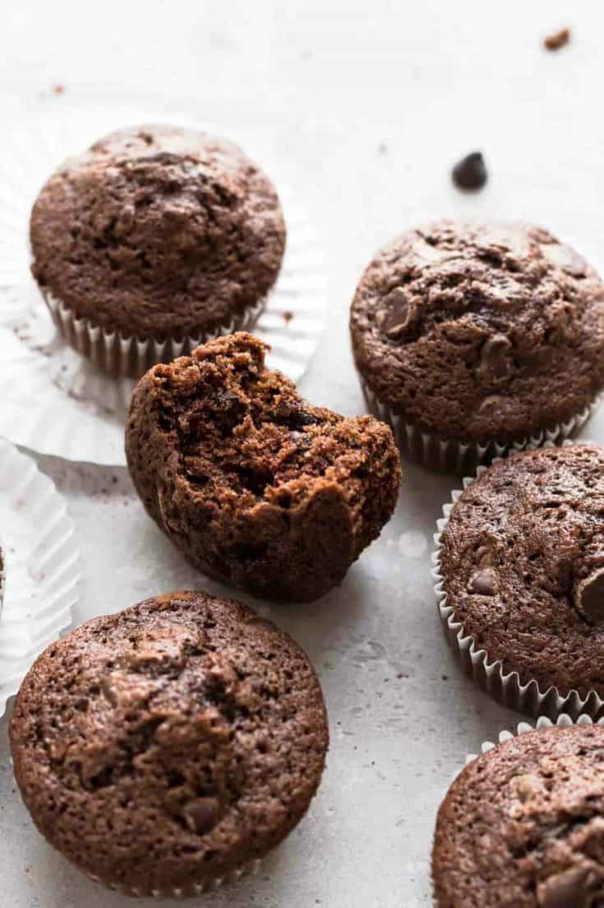

Chocolate Zucchini Muffins

Description
They have zucchini in them, so they are healthy, right?
Ingredients
- 1 1/2 cups granulated sugar
- 1/2 cup packed light brown sugar
- 1 cup vegetable oil
- 3 large eggs 🥚 🥚 🥚
- 2 teaspoons pure vanilla extract
- 2 1/2 cups all-purpose flour
- 1/2 cup unsweetened cocoa powder
- 1 teaspoon salt
- 1 teaspoon baking soda
- 1 teaspoon ground cinnamon
- 2 cups finely grated zucchini, slightly drained
- 1 cup chocolate chips
Steps
- Preheat oven to 350°F. Spray muffin pan wells with nonstick cooking spray or line with paper liners.
- In a large bowl with an electric mixer, beat together the sugars, oil, eggs, and vanilla until thoroughly
combined.
- In a medium bowl, whisk together the flour, cocoa powder, salt, baking soda, and cinnamon.
- Gradually add the dry ingredients into the sugar mixture and mix until just combined.
- Fold in zucchini until it is evenly distributed into the batter. Stir in semisweet chocolate chips.
- Use a large cookie scoop (about 3 tablespoons) to distribute batter amongst the prepared muffin wells.
- If desired, sprinkle mini milk chocolate chips onto the top of each muffin.
- Bake in preheated oven for 18-22 minutes.